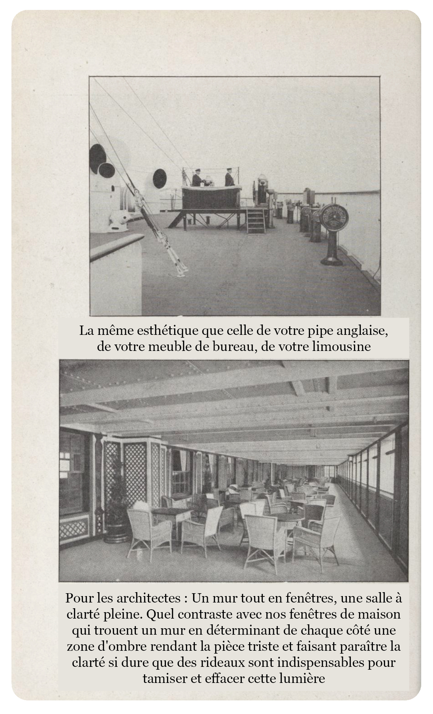
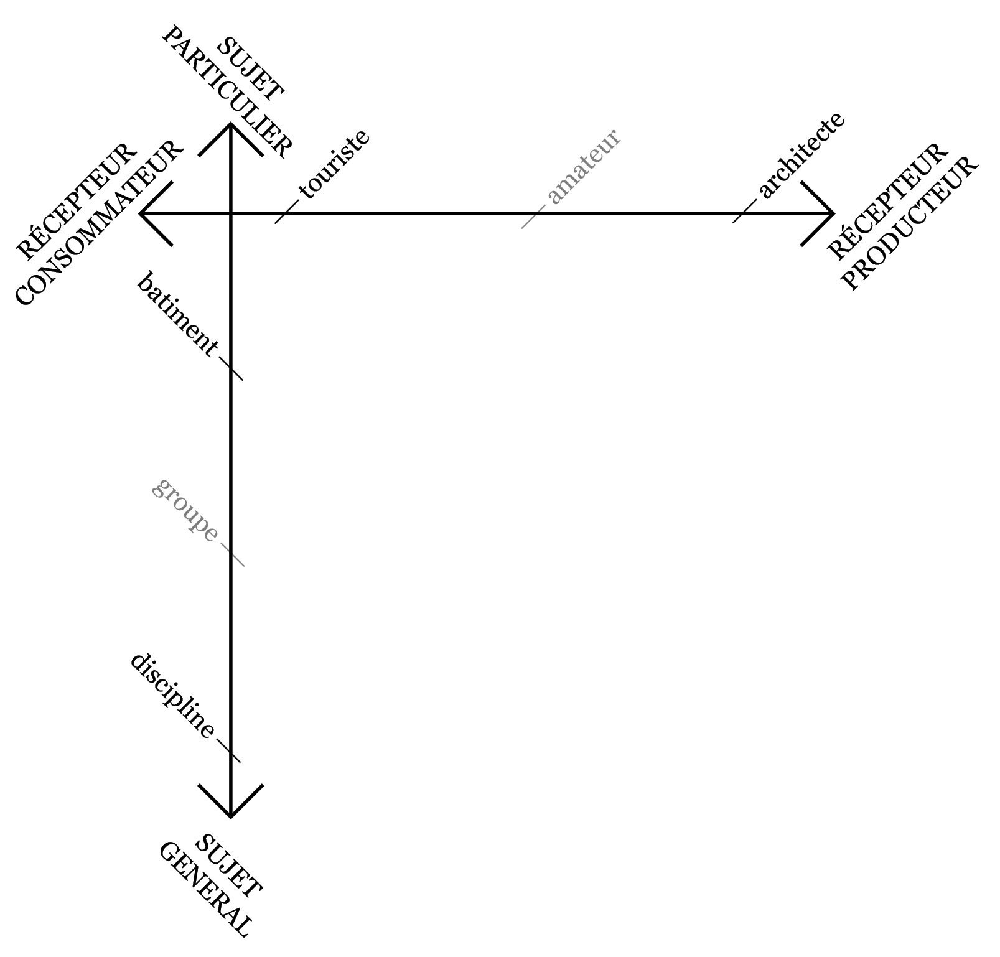
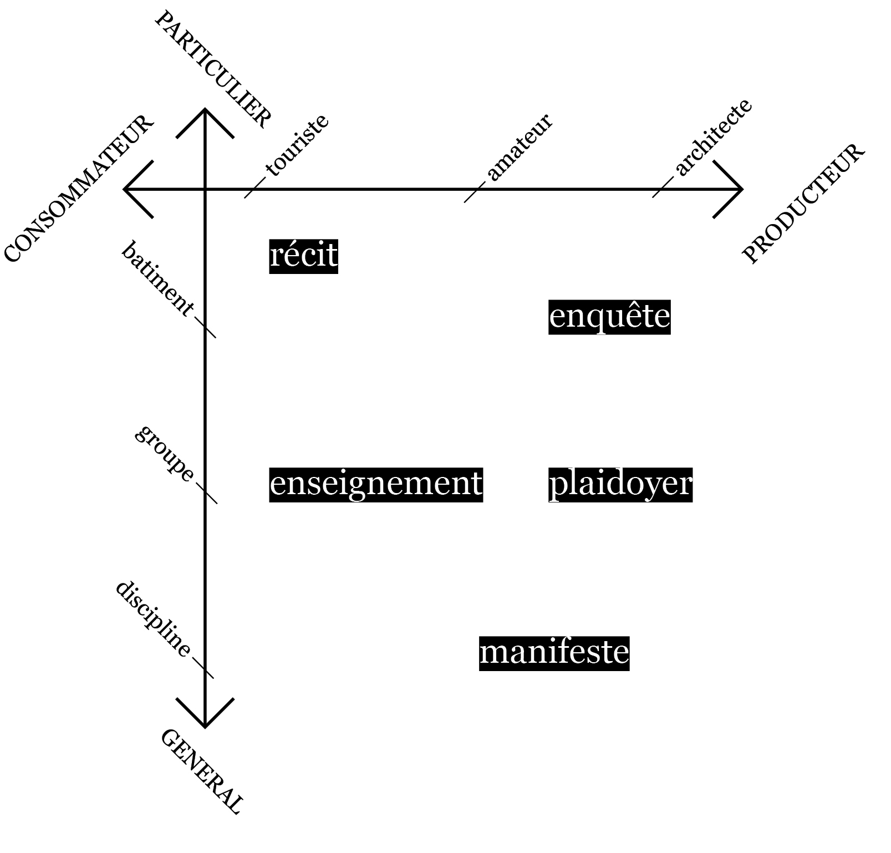
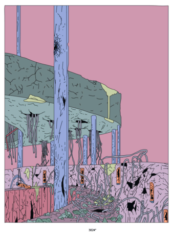

Styles de la Critique
Hugo Forté
Club ASAP 10
avril 2026
Temps de lecture : 10 min
Si l’on devait s’intéresser à la critique architecturale comme “genre” textuel, on pourrait alors s’appuyer sur les catégories proposées par Michel Foucault dans son Archéologie du savoir*.
Définir la critique de l’architecture dans ce cadre, c’est alors comprendre les ruptures et les disjonctions qui la séparent du reste des énoncés sur l’architecture.
En introduction de ce Club ASAP, je voudrais proposer deux critères essentiels qui me semblent - à l’heure qu’il est - être les caractères nécessaires et suffisants pour déterminer la critique architecturale sous toutes les formes qu’elle peut prendre (mission est donnée aux participant·e·s de le confirmer ou de prouver le contraire.).
J’avancerai donc que la critique architecturale concerne tous les énoncés portant sur l’architecture qui 1. sont prescriptifs, et 2. traitent de réalisations (ou projets de réalisations) spécifiques.
On peut aussi dire dans l’autre sens, qu’une critique d’architecture est toujours prescriptive et dirigée sur une architecture particulière.
* M. Foucault, Archéologie du Savoir, Gallimard, 1969
Mais même en limitant le champ de la critique à ces deux exigences, cela reste un sacré morceau et pour démontrer l’hypothèse de départ mieux vaut alors re-diviser notre bout du discours architectural en parties plus saisissables.
Tout d’abord, on peut avancer que un énoncé critique vise nécessairement à atteindre un récepteur (récepteur pouvant dans le cas limite être le même que l'énonceur, par exemple dans un journal personnel).
Il apparaît lorsqu’on énumère les différents médiums de diffusion de la critique architecturale qu’on peut la diviser entre celle visant un récepteur consommateur ou un récepteur producteur de l’architecture (et cela vaut sûrement pour l’ensemble des objets de critique).
Autrement dit, soit la critique vise à aider le consommateur de l'œuvre en le conseillant (ou déconseillant) et en l'accompagnant, soit elle vise à influencer la production future d’architecture en portant un jugement sur ce qui a déjà été fait et donc ce qui devrait être fait désormais.

En haut, la critique pour consommateurs guide le goût : "La même esthétique que celle de votre pipe anglaise, de votre meuble de bureau, de votre limousine"
En bas, la critique pour producteurs guide la main : "Pour les architectes : Un mur tout en fenêtres, une salle à clarté pleine. Quel contraste avec nos fenêtres de maison qui trouent un mur en déterminant de chaque côté une zone d'ombre rendant la pièce triste et faisant paraître la clarté si dure que des rideaux sont indispensables pour tamiser et effacer cette lumière"
Ensuite on peut s’intéresser au sujet de chaque énoncé critique. Là aussi, en scannant mentalement les différents exemples que chacun a en tête, on se rend compte de la variété des objets sur lesquels la critique se porte.
Il y aurait bien des manières d’ordonner cette liste, mais pour aujourd’hui, je propose de prendre ça par le prisme du particulier au général. C'est-à-dire que la critique architecturale va de l’édifice à la discipline tout entier en passant par des corps intermédiaires que sont les groupements d'œuvres (par auteur, par localisation, par style...).
Ainsi, en croisant ces deux axes, on obtient un beau tableau aux limites floues (comme on les adore à ASAP) qui permet de situer l’ensemble des énoncés critiques.

En haut à gauche, on trouve la forme de critique peut être la plus fréquente, qui consiste en le simple recensement des ouvrages remarquables*, souvent à grand renfort d’illustrations photographiques et parfois de documents géométraux fournis par l’architecte.
Ici, le rôle principal du critique est d’être scripteur plus qu’auteur : l’article qui accompagne les images est en partie - voir entièrement - repris du livret de presse écrit de la main du concepteur. L’apport du critique se retrouve uniquement dans son augmentation de la portée du message, il diffuse le travail d’un autre.
Là est son rôle prescripteur : il est le sélectionneur de ce qui mérite l’attention, de ce qui doit être connu. La description de l’ouvrage est secondaire, son travail est accompli dès que ce dernier est inscrit au sommaire d’une publication au nombre de pages matériellement limité.
* La controverse "French Touch" et la publication de son Annuaire Optimiste montrent que même un simple travail de recensement est un acte de positionnement de la part du critique.
La frontière avec le pendant orienté-producteurs d’une telle critique est parfois floue, ne serait-ce que parce que les articles de critique architecturale se retrouvent rarement dans la presse grand public.
Ainsi, la plupart des premiers cas sont en réalité publiés dans des magazines spécialisés et peuvent alors par moment tendre à incorporer des aspects plus précis et techniques dans la description qui ne peuvent toucher qu’un public sachant.
La diffusion de détails techniques notamment ou de données chiffrées (permettant par exemple de calculer le coût au m²) sont les marqueurs d’un nouvel objectif de la critique de bâtiment orientée-producteurs : la reproductibilité.
Là où critique de bâtiment pour consommateur vise à aider les lecteurs à se projeter dans l’édifice simplement décrit, la critique pour producteur participe à une entreprise de rétro-ingénierie tentant d’expliquer les choix de réalisation, les étapes de conception et construction.
Si la première est plus de l’ordre du récit (avec parfois sa part de fictionalisation) la seconde relève alors de l’enquête.
Le passage de la critique d’une œuvre à celle d’un groupe amène le même problème qu’elle s’adresse à un public producteur ou non : celui du passage du particulier au général.
J’avais déjà pu avancer dans un club asap précédent comment la détermination d’un groupement d’œuvres était une entreprise intellectuelle prescriptive par et dans laquelle le critique doit justifier le périmètre de son groupement, notamment en déterminant des critères d’appartenance (voir l’introduction au Club ASAP 4 sur le post-modernisme).
Cette opération est nécessairement toujours menée auprès des sachants du champ, puisque seule la reconnaissance par les pairs permet d’adouber cette catégorie qui pourra alors ensuite être présentée au grand public.
Ainsi, dans un premier temps, la critique prend la forme d’un plaidoyer qui vise à convaincre avec réquisitoire et preuves à l'appui, et ensuite, elle s’apparente plus à un enseignement cherchant à transmettre voire à vulgariser ce nouveau savoir accepté comme vrai.
On pourrait se demander s’il existe réellement des critiques de l’architecture tout entière, c'est-à-dire des critiques de la discipline architecturale en soi. En effet, c'est souvent surtout l’état actuel de l’architecture qui pousse les uns et les autres à prendre la plume.
La critique de l’architecture devant alors être vue comme une critique de l’architecture contemporaine (voir le club asap 08 sur l'avant-garde), qui implique alors de déterminer un “état présent de l’architecture”, ce qui revient donc à faire la critique d’un groupe.
Malheureusement, il faut reconnaître que le travail de détermination précise de l’entité architecture actuelle qui est critiquée est rarement poussé et on aura souvent recours à des critères d’identification soit flous (l’architecture des starchitectes), soit trop larges pour être pertinents (l’architecture capitaliste) soit déjà en eux incriminants (la France moche).
Cette imprécision dans la description du groupe attaqué révèle en réalité le vrai intérêt des auteur·ices : la critique de l’architecture s’intéresse uniquement à l’architecture future.
L’analyse et la dénonciation de ce qui se fait aujourd’hui ne servent alors que de tremplin pour dérouler le véritable objectif du texte qu’est la prescription de ce qui devra se faire demain. Elle reste cependant une étape inévitable pour justifier la proposition d'un contre modèle.
Relevant du manifeste, la critique de la discipline s’adresse donc naturellement quasi-exclusivement aux producteurs, et si elle se tourne vers le public “non-sachant”, c’est pour sa compétence de décideur indirect (électeur, acheteur, voire manifestant).
Même avec ces premières explorations, il reste encore de la place dans notre tableau de classification pour d'autres genres littéraires de la critique.

On peut par exemple songer à la pure fiction qui semble trouver les faveurs des architectes en ce moment (et particulièrement des architectes mécontents du travail des critique, qui préfèrent alors engager leurs propres porte-plumes). La critique par la fiction répond autant que les autres formes aux exigences listées de prescription et de point de départ spécifique.
Elle est prescriptive, car elle propose de nouveaux sens à donner à l'œuvre, elle comble les trous de sens laissés par l'architecture qui reste un médium peu bavard. La critique par la fiction se rapproche de la nouvelle critique que défendait Barthes en 1966 qui produit qui doit convaincre plus qu'être démontrée. (voir l'intro au club asap 01)
"Le rapport de la critique à l’œuvre est celui d’un sens à une forme. Le critique ne peut prétendre « traduire » l’œuvre, notamment en plus clair, car il n’y a rien de plus clair que l’œuvre. Ce qu’il peut, c’est « engendrer » un certain sens en le dérivant d’une forme qui est l’œuvre."
Roland Barthes, Critique et Vérité, Seuil 1956

A droite : Samy Stein, Le Sentier, 2025, qui raconte l'histoire d'un ventriloquiste réfugié et perdu dans les ruines de l'édifice après la fin du monde
On pourrait ainsi multiplier les exemples de registres critiques (que penser du billet d'humeur, de la parodie, voire du contre-projet ?). Toujours est-il, on l'a vu, que l'acte de produire une critique architecturale peu importe sa forme passe nécessairement par les mêmes étapes inévitables : Se saisir d'une situation réelle particulière qui sera alors le point de départ d'un argumentaire dont l'objectif conscientisé est d'altérer l'avis et l'action de son public.
En ce sens, on peut voir la critique comme une forme située de théorie, toujours plus soumise à l'acceptation par son interlocuteur que la véracité objective. Une théorie retenue par le réel qui "ne peut pas délirer" (Barthes).
Pistes de développement :
Le linguiste John Austin propose qu'en réalité tout énoncé est nécessairement en partie performatif (How to do things with Words, 1962). Selon lui, tout acte de parole a nécessairement deux effets, le premier perlocutoire dépend du pouvoir conventionnel donné à l'émetteur (déclarer un mariage, baptiser un navire...) le second illocutoire dépend de la réception psychologique de l'énoncé par le récepteur (est-il vexé, convaincu, effrayé ?).
Le contexte d'énonciation de la critique et notamment la position conventionnelle de son auteur influencera alors énormément sur les conséquences de son message. Aux axes Consommateur / Producteur, et Particulier / Général, faut-il ajouter Perlocutoire / Illocutoire pour continuer le grand travail de dissection de la critique ?
Quelles exigences formelles pour la critique ?
Toujours dans Critique et Vérité, Barthes propose trois exigences :
" Le critique dédouble les sens, il fait flotter au-dessus du premier langage de l’œuvre un second langage, c’est-à-dire une cohérence de signes.
Il s’agit en somme d’une sorte d’anamorphose [...] qui elle-même est une transformation surveillée, soumise à des contraintes optiques: de ce qu’elle réfléchit, elle doit tout transformer ; ne transformer que suivant certaines lois ; transformer toujours dans le même sens. Ce sont là les trois contraintes de la critique."
De la même manière que la recherche et la théorie ont leurs propres méthodes et règles, peut-on déterminer l'ethos et la déontologie de la critique ?
L'ensemble des articles issus du club asap 10 sont disponibles ci-dessous:
| # | Titre | Auteur | |
|---|---|---|---|
| 100 | Les styles de la critique | Hugo Forté | Club #10 |
| 101 | L'oeuvre critique | Maxime La Goutte | Club #10 |
| 102 | Démanteler le spectre post-critique | Louis Fiolleau | Club #10 |
| 103 | The backrooms, une fiction critique populaire | Titouan Gracia | Club #10 |
| 104 | What you read is what you get | Hugo Forté | Club #10 |
| 105 | Un problème chez ASAP | Herzgeg & Deux Neurones | Club #10 |
| 106 | Tableau nantais d'une critique | Un gars laxique | Club #10 |